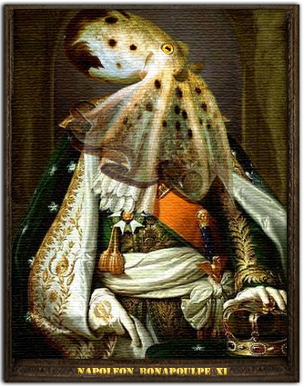

! LES POULPES AU POUVOIR ! |
||
| La famille des poulpes |
Annonces rapides:Le saviez-vous ?
Sacha croit qu'un poulpe et une pieuvre sont un animal différent.
Information du jour
Le texte central a été copié/collé de wikipédia.
|
|
Poulpes > Humains |

Le mot « poulpe » vient du grec polypous, qui signifie « plusieurs pieds ». Le mot pieuvre est d'origine plus récente et est introduit en 1865 dans la langue française par Victor Hugo dans son roman Les Travailleurs de la mer. Le mot est emprunté du vocabulaire guernesiais de pêcheurs entendu lors de son séjour sur l'île anglo-normande. Il supplante rapidement le mot poulpe dans l'usage courant. Son succès est tel, qu'il est repris en italien avec le mot piovra. Ces deux appellations ne concernent pas tous les octopodes. En effet, il s'agit d'abord d'une appellation commerciale et gastronomique, représentée notamment par le poulpe commun qui abonde sur les côtes atlantiques et méditerranéennes. Ainsi, on désigne par ce terme les espèces de la famille des octopodidés, soit la plus grande famille d'octopodes, rassemblant plus de 200 espèces. Les espèces de cette famille ont notamment comme point commun leur mode de vie benthique, mais de manière abusive, le terme « poulpe » désigne les autres espèces du super-ordre Incirrina puisqu'elles partagent avec la famille Octopodidae certains caractères, hormis leur mode de vie benthique. Tandis que les espèces de l'autre sous-ordre (Cirrina) ne sont donc pas des poulpes puisqu'elles possèdent des cirres, une ombrelle et des nageoires et ont un mode de vie pélagique. |
|
| Bonjour je suis un texte en bas de la page, je pourrais avoir un copyright ici mais je ne suis qu'une petite page de test. | ||